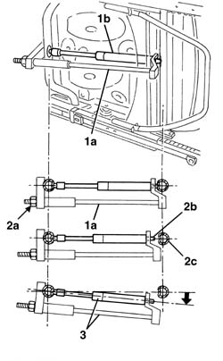
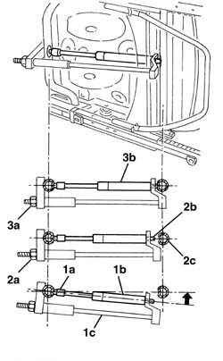

7045A60 FRONT SEAT LIFT DEVICE - R R
- Path
- Procedures > 70 FITTINGS > 7045 FRONT SEATS > 7045A FRONT SEAT ASSEMBLY > 7045A60 FRONT SEAT LIFT DEVICE - R R
- Kind
- repair procedure (removal / refitting; the operation number is the code)
- Applies to
- all engines; all production periods
- Interactive page
- https://sloeber94.github.io/elrnDB-aGt/en/#/125001909
Applies to: all engines; all production periods
 Removing
Removing
 Refitting
RefittingOp. 7045A10 L/H OR R/H FRONT SEAT (ONE) - R+R
Check the seat is in fully raised position.
1. Fit tool (1a) to the gas spring (1b) as shown in the figure.
 | Name | Country |
|---|---|---|
1a | Tool | 1.870.897.500 |
2. Tighten up tool nut (2a) (to compress the gas spring) until gas spring pin (2b) disengages from the seat in tube (2c).
3. Turn the tool and gas spring assembly as far as strictly necessary, then unscrew the tool nut until the gas spring withdraws fully.

Applies to: all engines; all production periods
Refitting
RemovingCheck that the gas spring device is undamaged and load as necessary.
1. Rest head (1a) of gas spring (1b) in its seat on the tube, then fit tool (1c) as shown in the figure.
| Name | Country |
|---|---|---|
1c | Tool | 1.870.897.500 |
2. Tighten tool nut (2a) (by compressing the gas spring) until device pin (2b) is aligned with its seat in the tube (2c).
3. Undo tool nut (3a) until gas spring device (3b) is fully engaged in the seat.

Applies to: all engines; all production periods
Op. 7045A10 L/H OR R/H FRONT SEAT (ONE) - R+R
Test the device is working properly.